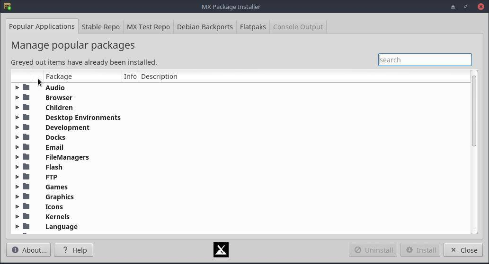
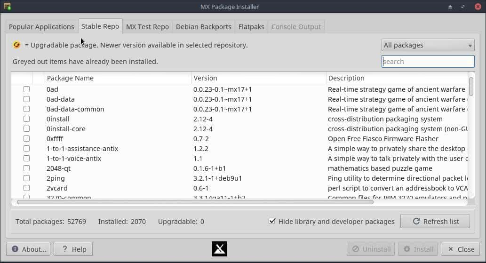
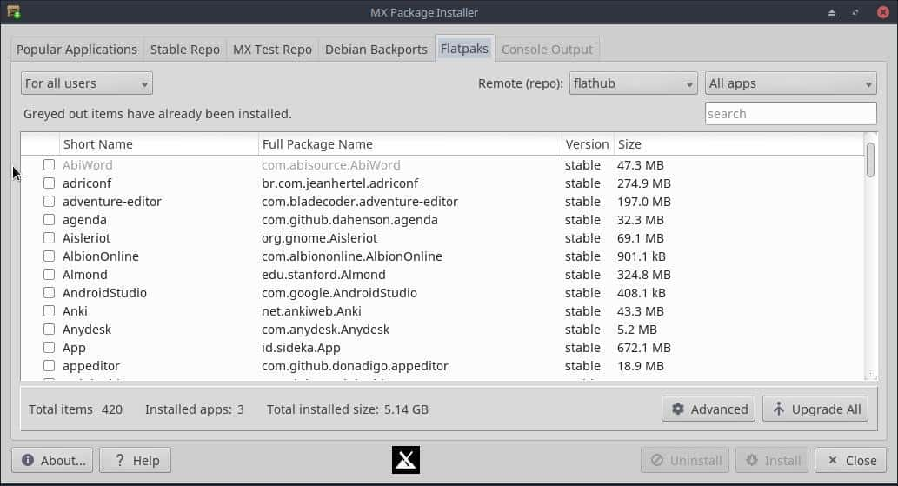
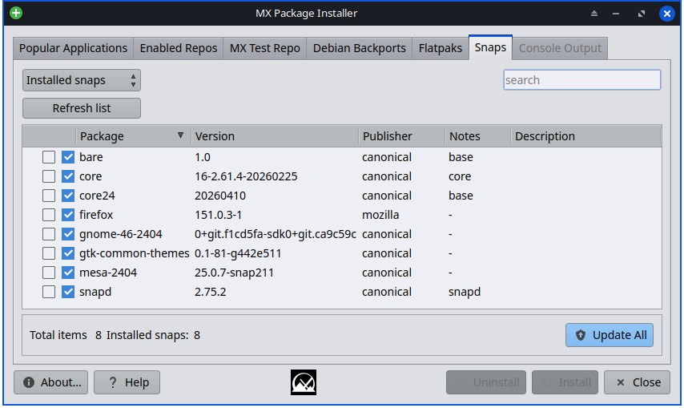
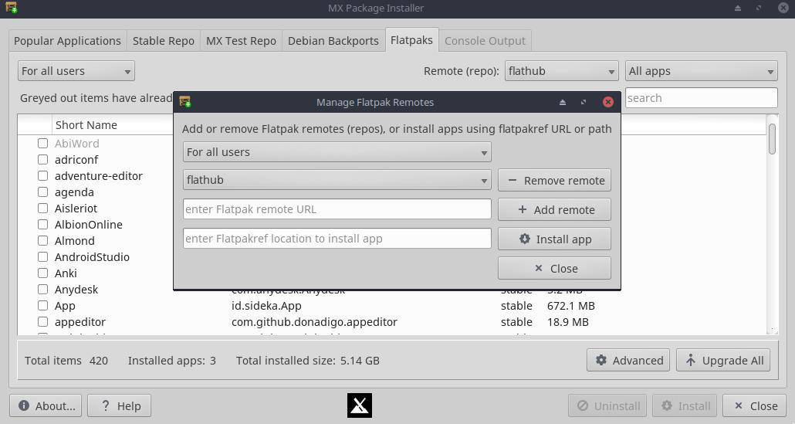

HELP: MX Package Installer
It is listed in the Favorites of Whisker menu by default; but if that has been removed, click Start menu ≻ System ≻ MX Package installer and provide the root password.

Popular Applications
- Expand the categories with the little arrow to see the packages available; more information (including screenshots where possible) is available by clicking on the small information icon.
- The Search box will parse application names and display matches in the tree.
- Check those that you want, and click Install.
- The Console Output tab will be displayed as first the repos are updated and then your packages are installed.
- If a package is already installed, you will have the option to uninstall or reinstall.
- If there are problems, there is a log at /var/log/mxpi.log and mxpi.log.old for you to post in the forum.
Enabled Repos

This tab gives you access to the full catalog of apps available for MX Linux. It has a limited feature set and is not a replacement for a full package manager like the default Synaptic. Consider the MX PackageInstaller supplementary to Synaptic.
- Packages then can be manipulated in similar fashion to the Popular Applications Tab.
- The “Installed” column shows a version number when it differs from the version in the selected repo.
- Use the drop-down above the list to filter by status: All packages, Installed, Upgradable, Not installed, or Autoremovable. The filter works together with the search box next to it.
- “Autoremove packages” and “Upgrade All” buttons appear when there are autoremovable or upgradable packages to act on.
MX Test Repo
- The MX Test Repo is not the same thing as the Debian testing repo.
- This tab allows the user to browse packages available in the MX Test repo without needing to change any apt sources manually.
- If the user chooses to install a Test repo package via the MX PackageInstaller, the Test repo sources will be automatically added for the duration of the application install process. The Test repo sources will be disabled after the installation is complete.
- As with the Enabled Repos tab, a filter drop-down (All packages, Installed, Upgradable, Not installed, Autoremovable) and search box are available, along with an “Only repo packages” checkbox to limit the list to packages that come from the MX Test repo.
Debian Backports
- Similar to the MX Test Repo tab, this tab allows the user to browse packages available in the Debian Backports repository maintained by Debian, without needing to change any apt sources manually.
- If the user chooses to install a Debian Backports package via the MX PackageInstaller, the Debian Backports repo sources will be automatically added for the duration of the application install process. The Debian Backports repo sources will be disabled after the installation is complete.
- The same filter drop-down (All packages, Installed, Upgradable, Not installed, Autoremovable), search box, and “Only repo packages” checkbox are available here too.
Flatpaks

Flatpaks are a type of package that has all the dependencies included that’s supposed to work on multiple Linux distributions.
- They are not perfect: some might not work well, might not follow your theme, etc.
- The first flatpak that you install will probably pull a huge runtime, so it will take a long time to download and will take a lot of space on your harddrive (probably around 2-3GB), but the next flatpak will most likely be able to use that runtime, so it gets a bit better after you install a couple of flatpaks.
- By default, the “flathub” remote “repo” is used by default. Others can be added via the Advanced dialog.
- You can also install flatpaks via ref files via the Advanced dialog
Snaps

The Snaps tab lets you search, install, remove, and update Snap packages from inside MX Package Installer. This tab only appears if the system is booted with systemd, since the Snap service (snapd) requires it.
- If Snap support is not yet set up on the system, click “Set up Snap support” to install snapd and enable the Snap service.
- Use the drop-down to switch between “Installed snaps” and “Search store”; type a term in the search box and press Enter to search the Snap store.
- Check the packages you want and use the Install/Uninstall buttons as on the other tabs. Progress is shown live in the Console Output tab while Snaps download and install.
- Click “Update All” to update every installed snap at once.
- After installing a Snap app, log out and back in to see it appear in the Start menu and to use its commands from a terminal.
Q & A
- What effect does ticking “Hide library and developer packages” actually have? Does it just hide stuff as a de-clutter convenience, or could it possibly prevent essential libraries from being installed ?
- it hides application libraries (lib* packages) from the listing. but nothing prevents them from being installed if they are needed by an application.
- What effect does unticking “Also Install Recommended Packages” actually have? Does it just prevent unsolicited clutter, or might it prevent required dependencies?
- Debian has three levels of dependencies on packages: 1) depends, which are neccessary; 2) recommends, which can be nice and extend functionality, but are not strictly speaking required; and suggests, which are usually other applications that might compliment the package. By default, MX does not install the “recommends” by default. but checking the option means it will.
- If subsequently regretting installing a program plus its recommended packages? Is there any way to uninstall not just the originally selected program, but all of its recommended packages that came with it as well?
- For the most part, when uninstalling a package, its dependent packages will be marked “autoremovable.” We do not remove those by default, but you can from the command line by entering the code below.
- Look at the list carefully to make sure nothing you want or need is autoremovable. Usually things like libraries and “data” packages are small and ok to remove. things like Xorg/xserver, xfce, kde...big stuff like that should not be autoremoved.
sudo apt autoremove

Development history: Dolphin_Oracle, Adrian
License: here.
v. 20260630